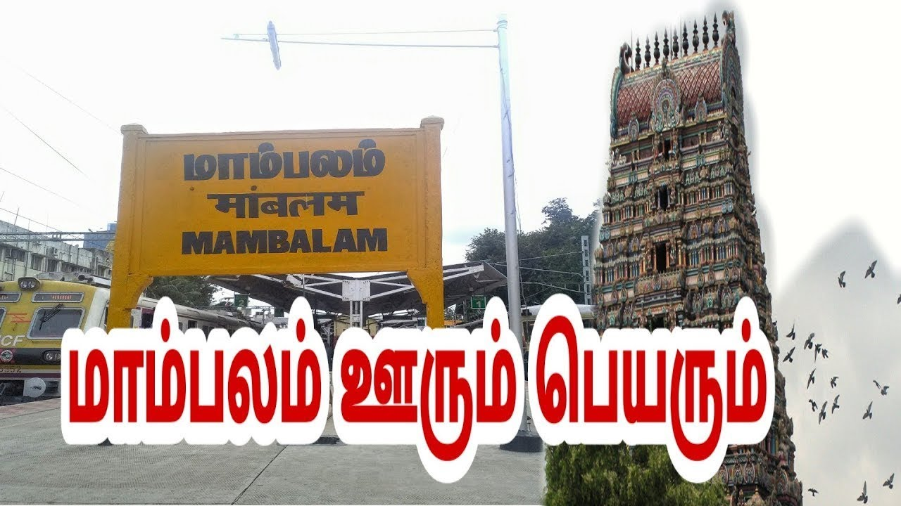

Chennai-West MamBalam:-

Description of West MamBalam:
West Mambalam is a well-known residential neighborhood in Chennai, famous for its peaceful atmosphere, traditional culture, and strong community life. Located close to T. Nagar and connected by the Mambalam Railway Station, it is one of the city’s most convenient and accessible areas. The locality is known for its temples, bustling markets, and classic Chennai lifestyle.
Ranganathan Street and Lake View Road bring daily crowds for shopping, while the quiet interior streets are lined with homes, schools, and small eateries. West Mambalam is also known for its religious heritage, with the Ayodhya Mandapam and several popular temples attracting devotees throughout the year. With its blend of tradition, connectivity, and comfort, West Mambalam remains one of Chennai’s most loved residential areas.